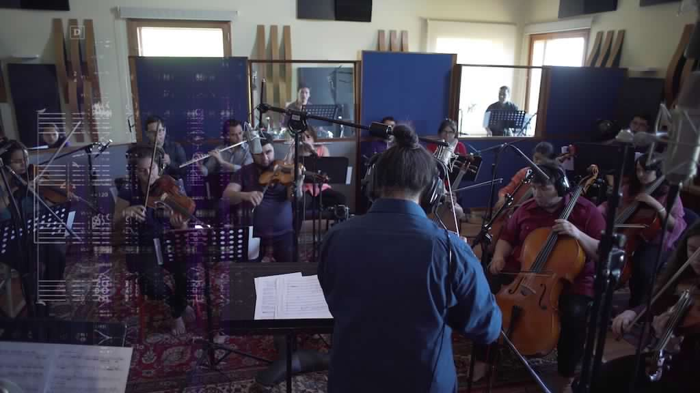
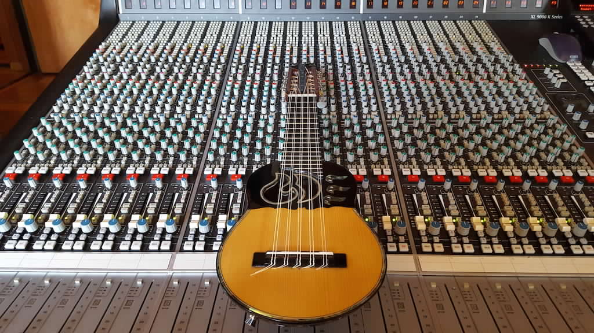

Concerto for Charango and Orchestra by Anya Yermakova
This work is composed with three main points of focus. First, the fundamental laws of physics (aka symmetry laws) form the conceptual fabric of the piece. The score is a mix of traditional and graphic notations, with the latter comprised of astronomical data. Second, the commission came from an extraordinary youth orchestra in a disadvantaged neighborhood of Santiago, Chile. Finally, the work invites charango further into the world of classical-contemporary music, while attending to the many strengths from folkloric music for which it is known.
The driving ambition of the composition was to invite the musicians to be playful with with the astronomical data much in the way scientists *play*. That is, to devise “boundary conditions” for an improvisatory interpretation of the score that resemble the “boundary conditions” guiding physicists through recurring uncertainties in the scientific research process. For the physicist, these include “laws” such as conservation of energy, conservation of angular momentum, relentlessness of gravity, and so on. For the musician, the score has shifting aleatoric elements that mirror these laws, echoing the hypothetical emergent structures in the early universe. Written for and interpreted by a youth orchestra, the hope is that young musicians are encouraged to see their creative process as resembling that of even the most “advanced” contemporary scientist, and to discourage othering and alienation between “science” and “art” from a young age.
The charango concerto was composed in collaboration with astronomer and charango player Sebastián Pérez.
Listen to the Concerto here:
Recorded at Estudio del Sur, María Pinto (Chile) on December 2018. For score and performance rights please contact the composer at www.anyayermakova.com.
The Orchestra
The marvelous Pudahuel Youth Orchestra from a neighborhood of Santiago, Chile, under the baton of Jorge Luis Cornejo, were essential to the inception, growth and premiere of this piece. Hear more about the members’ experience of learning and performing the Charango Concerto in the link below.

The Charango
The charango is a South American instrument born in the Andes, with a bright powerful sound. It is traditionally tuned such that open strings correspond to an Am7 chord. All strings are doubled, tuned in unison except for the central E, which are tuned to an octave. The charango was taken on a ride in this composition into the classical contemporary world of extended techniques and novel notation, while maintaining its historicity of rhythm styles and plucking techniques.

The Science
Commissioned to create a concerto inspired by the contemporary astrophysics’ account of the Big Bang, the composer and charango soloist chose to focus on the so-called "fundamental laws,” which are essential for the scientific process. Each fundamental law is associated with equations of “symmetry,” which date back to Emmy Noether, a female mathematician doing algebra research over a century ago. This implicit mathematical intuition is the main element behind the scientific material in the composition, and the main conceptual take away for the interpreters of the Charango Concerto.
Acknowledgements
The people involved in the realization of this recording are featured in the credits of the video above.
The charango concerto team acknowledges financial support from Ministerio de las Culturas, las Artes y el Patrimonio, through a Fondo de la Música grant 2018.